6.1. Creating and Managing Projects¶
In software development projects for embedded systems, there is quite commonly the need to create a single project that builds related versions of the application for different target hardware/memory configurations, with different build options, etc. In large-scale projects, there is also the need to organize files in a structure that is easily navigated and maintained by multiple team members.
The CCS IDE is a flexible development environment that allows you to (among other features):
- Organize files in a structure that is easily navigated and maintained.
- Customize project properties.
- Create multiple build configurations for a single project, each with its own set of build options.
- Specify different version of build tools for each build configuration.
- Create a system level project that simplifies maintaining multiple projects required for a multicore device.
This section discusses the project model used by CCS. It covers how to create, organize and configure projects to help you handle different versions of your applications.
6.1.1. Projects Overview¶
This section provides an overview of workspaces and projects, and the types of projects supported by CCS.
All work in CCS is based on projects, which are typically a collection of files and folders. Projects are stored and organized in workspaces.
6.1.1.1. Workspaces¶
A workspace is the main working folder for CCS and contains information to manage all the projects defined to it.
When CCS is launched, it will prompt for the workspace folder location. To avoid being prompted in the future, you can enable the option to use the selected folder as the default folder.
After it launches, the CCS Edit perspective will be visible by default. This perspective contains views most commonly used during code development, such as the Project Explorer, Editor and Problems view.
The default location of new projects will be within the workspace folder. Once a project has been added to the workspace, it will be visible in the Project Explorer view.
The workspace folder also stores user information such as user interface preferences and settings.
Workspaces are user specific, hence typically not checked into source control or shared between users. Instead, projects are checked into source control and each user would have their own workspace that references the projects.
It is possible to have multiple workspaces. Only one workspace is active at a time in Code Composer Studio but you can switch workspaces using the menu File → Switch Workspace….
Tip
It is advisable to periodically clean your workspace as they could get corrupted over time. Before cleaning, if there are workspace settings you’d like to preserve, you can save the current workspace settings so they can be imported into the new workspace. Projects will have to be re-imported after cleaning the workspace.
6.1.1.1.1. Saving Workspaces¶
- To save workspace settings: File → Export → General → Preferences → To preference file.
- To import workspace settings: File → Import → General → Preferences → From preference file.
To see a video demo of how to save/import workspace settings, check the References section.
Note
Although it is the recommended method, not all settings are preserved using the above method. Another way of saving all preferences is to copy over the ‘.metadata.plugins\org.eclipse.core.runtime.settings’ folder into the new workspace. This is only recommended if you are using the same version of CCS as was used with the older workspace.
6.1.1.1.2. Deleting Workspaces¶
To delete a workspace, simply delete the workspace folder from the file system. Note that this will also delete all projects contained within that workspace.
Deleting a workspace does not automatically remove it from the list of recent workspaces displayed by CCS during launch. To delete workspaces from the recent workspace list:
- Edit the file org.eclipse.ui.ide.prefs file found in <install dir>\ccsv[x]\eclipse\configuration.settings and remove the desired workspaces. OR
- Remove the workspaces from CCS menu Window → Preferences → General → Startup and Shutdown → Workspaces.
6.1.1.2. Projects¶
A project stores all the information needed to build an individual program or library, including:
- Filenames and paths of source code and object libraries.
- Build-tool options.
- Include file dependencies.
- Build-tool version used to build the project.
Projects typically contain files and folders. Similar to the workspace, a project maps to a physical folder in the file system. When a new project is created, its default location is in a subfolder (of the project name) within the workspace folder. However you can also choose a folder outside the workspace.
Once the project is created, a reference to it will be made in the workspace and the project will be visible and available for use from the Project Explorer view. Each project in the workspace must have a unique name.
Projects are either open or closed. When you create or import a project into the workspace it is automatically open. Multiple projects can be open simultaneously.
When you close a project, it is still defined to the workspace, but it cannot be modified by the Workbench. The resources of a closed project will not appear in the Workbench, but the resources still reside on the local file system. Closed projects require less memory and are not scanned during routine activity. Hence closing unnecessary projects can improve performance of CCS. Closed projects are still visible in the Project Explorer view with a ‘closed’ folder icon, so they can be easily opened when needed.
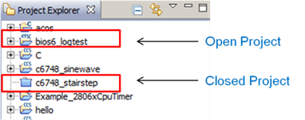
To open or close a project:
- Right-click on the project name in the Project Explorer view and select Open Project or Close Project respectively.
6.1.1.3. Project Explorer View¶
The Project Explorer view displays all projects that are part of the active workspace. The view is mostly a representation of the file system of the project folder. When you create a subfolder and move files to that subfolder from within the Project Explorer view, the actual filesystem is being altered. Similarly, changes made to the filesystem will be reflected in the Project Explorer view.
Note that not all files that appear in the view will exist in the filesystem and vice versa. Linked files will appear in the view but because they are references and not actual copies, they will not appear in the actual filesystem. The ‘Binaries’ and ‘Includes’ folders that appear in the Project Explorer view also are just references. The ‘Binaries’ folder points to the executable file in your active build configuration sub-folder (example, ‘Debug’).
The screenshot below shows the contents of the ‘c6748_sinewave’ project in the Project Explorer view and how it maps to the physical project folder in the workspace in Windows Explorer. Note how the CCS generated project files (.ccsproject, .cproject, .project) and .settings folder shown in Windows Explorer are hidden in the Project Explorer view and how the ‘Binaries’ and ‘Includes’ folders in the Project Explorer view do not exist in Windows Explorer. Otherwise the rest of the folders and files are structured the same in the Project Explorer view and Windows explorer.
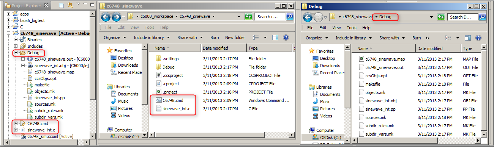
The Project Explorer view can be customized to show/hide various file types to reduce clutter in the view.
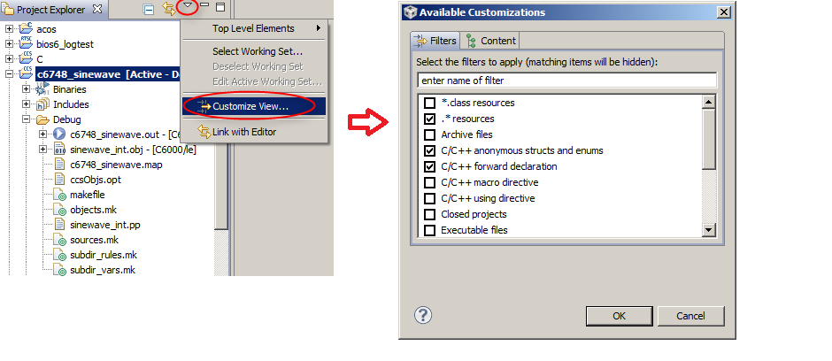6.1.1.4. Types of Projects¶
Code Composer Studio supports a few different types of projects. The project type can be specified when creating a new project. The project type will determine the toolchain and settings that the build interface will use and display.
- CCS Project - type of project most commonly used when working with the TI toolchain, or with supported GCC compilers. In this type of project, the makefile is generated automatically. Select this project type if you are working with TI embedded processors and want to create a project to load and debug on a TI device/kit using JTAG.
- C or C++ Project - standard Eclipse C or C++ project which requires an external toolchain such as GCC. The project wizard allows you to select a project type that can either generate makefile automatically or not. For example, if you select the Project type to be “Executable, Shared Library or Static Library” , by default it will create the makefile automatically. If you select the Project type to be “Makefile project” it will not create makefile automatically. You can also create a “Executable” project, and then modify the project property to not generate makefile automatically. Select this project type if you want to create a standard Eclipse C/C++ project and have it use a toolchain such as GCC.
- Makefile Project with Existing Code - empty project that does not create makefile automatically. This is used for importing, modifying and building existing makefile based code. Select this type of project if you have a code base that has its own makefile but you wish to build the project through a GUI interface. When creating the project you specify the location where the code and makefile reside, as well as the toolchain used for the build.
For more information on standard Eclipse C/C++ Projects and Makefile projects, refer to the Eclipse online documentation.
6.1.2. Working with Projects¶
This section covers the steps for creating, importing and working with projects.
6.1.2.1. Creating New Projects¶
The steps below describe how to create new projects for the different types of projects supported by CCS.
6.1.2.1.1. Creating New CCS Project¶
To create a new CCS project, follow the procedure in the relevant section in the Getting Started chapter.
6.1.2.2. Adding or Linking Source Files to Project¶
CCS supports two methods of adding source files and/or folders to projects. You can either add files or link files.
When you add a file/folder to a project, it is physically copied to the root location of the project directory.
When you link a file/folder to a project, the project will create a reference to the file/folder in the file system instead of copying it into the project directory. Linked files appear in the CCS Project Explorer view with a special icon as shown below.
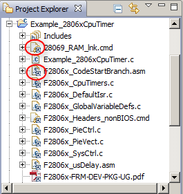
All files contained in a project (either copied or linked) will be included in the project build unless specifically excluded. To exclude a file from build, refer to Exclude files from build.
To copy or link files to a project, either:
- Select Add Files from project’s context menu, browse and select the file(s) you wish to add, or
- Select the file(s) in your system’s File Explorer (Windows Explorer on Windows, Finder on macOS etc) and drag and drop them into the project in the Project Explorer view, or
- Copy the file(s) directly into the project directory in the file system.
If you use either of the first two methods, the dialog will prompt you to select whether to Copy files or Link to files.
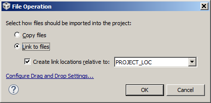
If you choose Copy files, the files will be copied into the project directory.
If you choose Link to files, the files will be linked. You can set the link location to be either an absolute path or a path relative to a path variable. For projects that will be shared among multiple users, use relative link paths as described in the Portable Projects page.
To see a video demo of how to add files to a project, check the References section.
To copy or link folders to a project, either:
Select the folder(s) in your system’s File Explorer (Windows Explorer on Windows, Finder on macOS etc) and drag and drop them into the project in the Project Explorer view (this allows for copying or linking), or
To link a folder, follow this procedure:
- Right-click on the project and select New → Folder.
- Click on Advanced >>.
- Select Link to alternate location (Linked Folder).
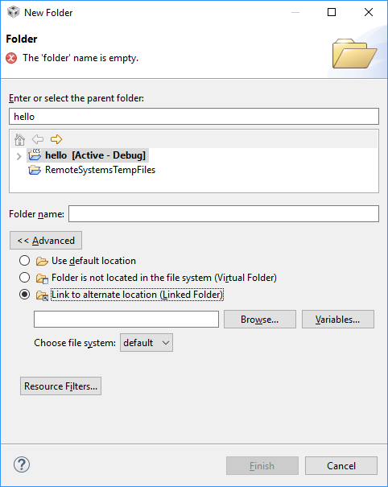
- Click Browse to browse to the folder you want to link (or click Variables to add a path using a variable).
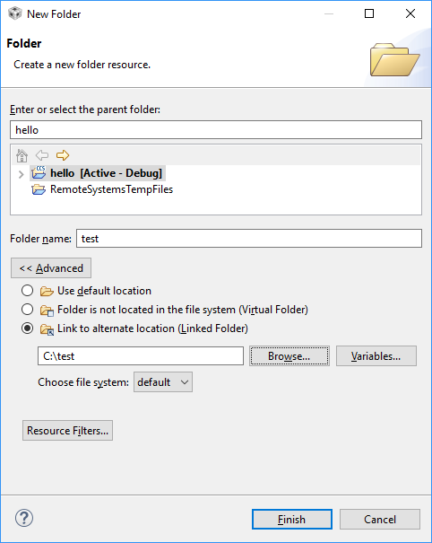
- The folder should now be linked to the project.
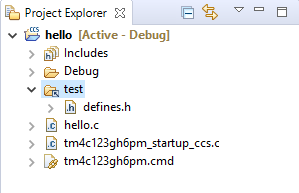
If you find that the Link to files is not working as expected (for example, the file does not appear in the Project Explorer view after the selection), check that your Drag and Drop Settings has Enable linked resources enabled.
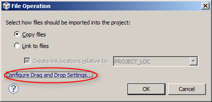
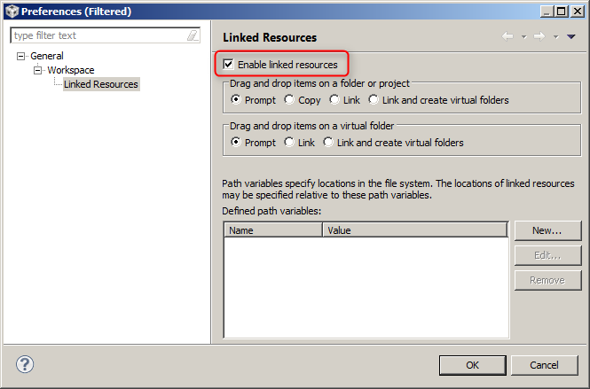
Note
Since linked files actually reside in a location outside the project folder, be aware that editing these files will modify the file not only for the current project but also for any other project that links to the same file. This is especially important when working with TI software packages and SDKs that may share source files among multiple projects.
6.1.2.2.1. Export Resources to Archive File¶
To archive a copy of all source files that are part a project (whether copied or linked) so they can be saved to a code repository or shared with another user, you can export the resources to an Archive file.
- Right-click on the project in the Project Explorer view, select Export, expand General and choose Archive File.
- Click Next.
- Enable the checkbox Resolve and export linked resources if you wish to export linked resources.
- Select All or select just the desired resources.
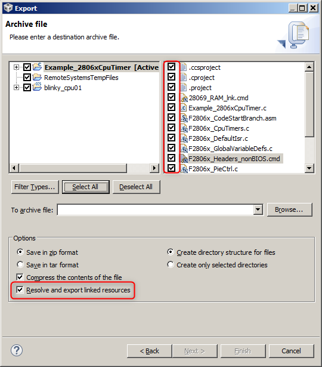
- In the To archive file: field, specify the name and location of archive file.
- Click Finish.
The resulting archive file will contain a copy of the selected resources.
Note that when the archive is imported into another workspace, all the resources (including linked resources) will be extracted into the root project folder instead of preserving the original directory structure for the linked files. So this technique allows you to export/share resources, however it will not recreate exactly the original build environment upon import.
6.1.2.3. Importing Projects¶
A more common scenario than creating a new project is to work with an existing project. This could be either your own development project or an example project provided by TI. In this case, you must first import the project into CCS.
CCS can import projects that are created with the same version or older versions of CCS, including legacy CCSv3 projects. However, bear in mind that the greater the variance in CCS version used to create the project vs. version used to import the project, the more error-prone the import process could be.
There are a few different methods of importing projects, depending on the type and source of project.
Import TI Example Projects Using Resource Explorer (recommended whenever possible):
Resource Explorer (in CCS versions 7 and higher) helps you browse examples for your chosen platform, download software packages and import projects all from within a single interface. Projects imported using Resource Explorer will be inherently copied to workspace.
More information on Resource Explorer is available here. Also refer to this section in the Getting Started chapter .
To import a project from Resource Explorer:
- Open Resource Explorer view from menu View.
- Under Software, expand the software package for your chosen device.
- Navigate to the example project and select it.
- In the right pane, click on Import to IDE.
Note: If the software package containing the example has already been downloaded and installed, the project will import. Otherwise you will be prompted to install the software package first, after which the project can be imported.
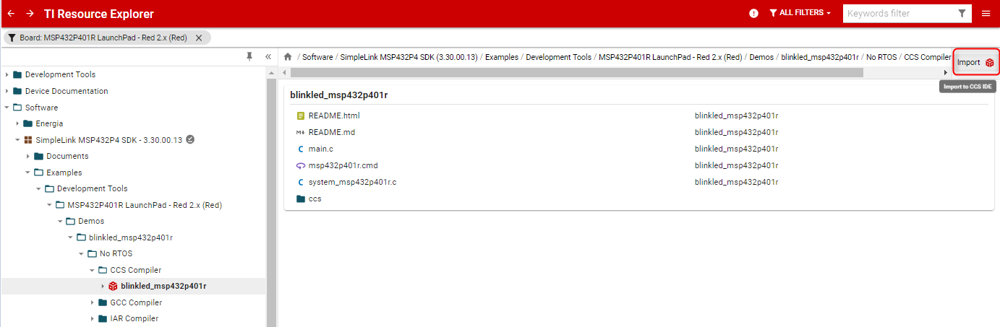
Import TI Example Projects Using Resource Explorer Classic (Legacy):
If you are using CCS 5.2+ to CCSv6, you may be interested in this import method. The Resource Explorer interface in these older CCS versions is different than the one in CCSv7 and higher. You cannot download software packages from this interface but you can still browse and import example projects from older software packages (like TI-RTOS, ControlSuite etc) if it is already installed on your machine.
This Resource Explorer interface (now called Resource Explorer Classic) is still included in CCSv7 and v8 but is not recommended for use with newer software packages. Also note that Resource Explorer Classic is not available in CCSv9 and higher.
More information on Resource Explorer Classic is available here.
To import a project from Resource Explorer Classic:
- Open Resource Explorer Classic from menu View.
- Navigate to project you wish to import and click on Import the example project into CCS.
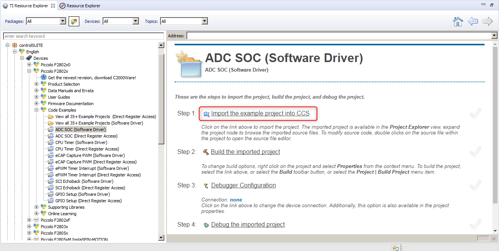
Import a CCS Project (other than CCSv3 project):
To import a CCS project using the CCS menu, please refer to the relevent section in the Getting Started chapter.
Import a Standard Eclipse C/C++ Project (not recommended for CCS
projects):
- Go to menu File → Import → General → Existing Projects into Workspace.
- Follow the steps presented in the import wizard.
Import a Legacy CCSv3 Project:
- Go to menu Project → Import Legacy CCSv3.3 Projects.
- Next to Select a project file, click Browse and browse to the CCSv3.3 project file (.pjt) OR Choose Select search-directory and click on Browse to browse to directory that contains the CCSv3.3 project file.
- Follow the steps presented in the project wizard.
A more detailed reference is available here.
6.1.2.3.1. Project Import Errors¶
Refer to the Troubleshooting section for information on resolving common project import errors.
6.1.2.3.2. Variables in Imported Projects¶
The CCS variable PROJECT_ROOT is set to the project’s root folder (the folder that contains the .*project files) by default. When a project is imported (with the “Copy project into workspace” checkbox enabled), CCS will create a new variable/macro named ORIGINAL_PROJECT_ROOT whose value is set to the original project’s root directory.
If the original project specifies the macro ${PROJECT_ROOT} in any paths such as compiler include paths, it will be replaced with ${ORIGINAL_PROJECT_ROOT} in the imported project. This is done because the project may still need to reference resources whose paths are set up relative to the original project location.
Many projects are structured such that the include files reside in a common folder and several projects can use/reference the same set of common include files. Several TI software packages such as TivaWare, C2000Ware are also set up this way. When projects from these packages are imported and copied to workspace, the include folders are not necessarily copied over. So, if the original project has compiler include paths set up relative to the variable PROJECT_ROOT, those paths will be converted to use ORIGINAL_PROJECT_ROOT after project import, so the include files are still correctly referenced relative to the original project.
In your custom project, if you wish to specify include paths to always be relative to the “current” project directory rather than the “original” project directory, use the variable ProjDirPath instead of PROJECT_ROOT.
6.1.2.4. Renaming Projects¶
To rename a project that is open in the Project Explorer view:
- Right click on the Project and select Rename.
- Give it a new name and click OK.
6.1.2.5. Copying Projects¶
To make a copy of a project that is already imported and open in the Project Explorer view:
- Right click on the Project and select Copy.
- Right click in the Project Explorer view and select Paste.
- In the Copy Project dialog
- give the new project a different name, and
- use the default location or specify a different location
The copy process will copy over the files/resources from the original project folder into the copied project folder. However, if the project contains linked resources they will still point to their original location. It is the user’s responsibility to check if the project references linked files/resources from another location before directly editing such files. Refer to this section on linked files for more information.
6.1.2.6. Deleting Projects¶
To delete a project that is in the Project Explorer view:
- Right click on the Project and select Delete.
- In the Delete Resources dialog choose whether to additionally delete project contents on disk.
If the checkbox is enabled, the project directory in the file system will be deleted. If the checkbox is not enabled, the project will be deleted from the CCS workspace, but the directory will still be in the file system, so the project can be imported again at a later time.
6.1.2.7. Sharing Projects¶
The structure of a project is important when there is a need to share a project with another user or to facilitate having multiple users working on the same project at the same time. The most common use cases for sharing projects are discussed here.
- Sharing “simple” projects or “linked file” projects. Use this method
if you wish to share the project folder and all needed source files
to build the project. The source files can be either fully contained
within the project folder or linked to the project.
See the page below to learn how to share such projects.
Sharing Projects - Sharing only project folder of “linked file” projects. Use this
method if you wish to share the project folder only. It is assumed
that the person receiving the project already has their own copy or
access to the source files. This is a common use-case for projects
maintained in source control. In this case, the project should be
made portable so it can be easily shared among multiple users. The
key to portable projects is to avoid absolute paths. Creating
portable projects involves the use of
variables - linked
resource path variables and build variables.
See the article to learn more about these variables and how to create portable projects.
Portable Projects
6.1.2.7.1. Portability Across Operating Systems¶
In addition to creating projects without any absolute paths, other things to consider if the project needs to be portable across OS:
- Use forward slashes in all settings and options.
- Avoid upper/lowercase characters in file names, as Windows does not differentiate between them but Linux does.
6.1.2.8. Organizing Projects¶
The Eclipse framework (and by extension, CCS) provides a lot of flexibility for organizing and navigating your project resources. Some of the features are described here.
6.1.2.8.1. Working Sets¶
Working sets are used to group elements for display in views or for operations on a set of elements.
You can use working sets to restrict the set of resources that are displayed in the Project Explorer view. If you select a working set in the view, only resources, children of resources, and parents of resources contained in the working set are shown.
This is useful if you have a large number of projects in the view but wish to work on only on a sub-set of them at a given time.
To create a working set:
- Click on the View Menu in the Project Explorer view and go to Select Working Set.
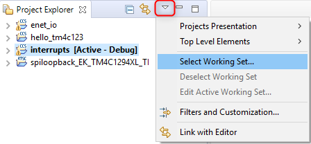
- Enable Selected Working Sets and click New to create a new working set.
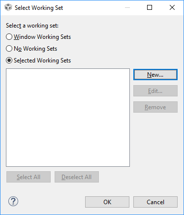
- Select C/C++ as the Working set type and click Next.
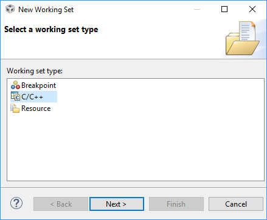
- Provide a name for the working set and select the projects that should be part of the working set.
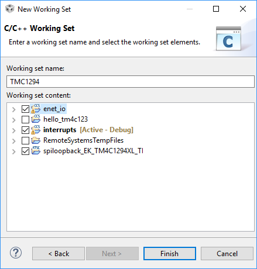
- Click Finish.
- After the working set is created, select it and click OK.
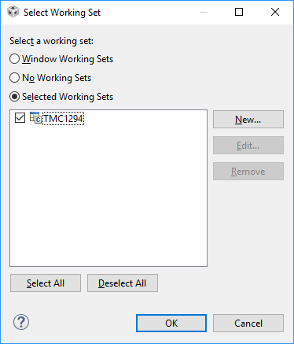
- Use the View menu in the Project Explorer view to select/deselect working sets and to control how projects are displayed.
- In this example, the Top Level Elements are set to show both working sets and ‘other projects’.
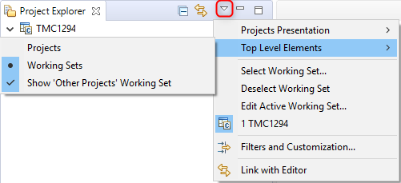
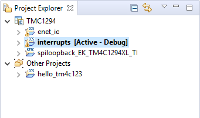
To see a video demo of how to use working sets, check the References section.
6.1.2.8.2. Virtual Folders¶
Virtual folders are folders that exist only in the CCS workspace tree, and have no file system location. By using virtual folders, files and folders can be organized in a project hierarchy that is independent of their location in the file system.
Regular file and folder resources can not be created under a virtual folder. Only other virtual folders or linked resources can be created directly under a virtual folder.
To create a virtual folder:
- In Project Explorer view, right-click on the project or folder where you want to create the virtual folder.
- Select New → Folder.
- In the Folder name field, specify the name of the folder as it will appear in the workbench. This name can be different from the name of the folder in the file system.
- Click Advanced.
- Select Folder is not located in the file system (Virtual Folder).
- Click Finish.
You can now link files to the virtual folder.
To see a video demo of how to use virtual folders, check the References section.
6.1.3. Configuring Projects¶
CCS provides a lot of flexibility when it comes to project configuration and management.
6.1.3.1. Project Properties¶
There are many settings that define the properties of a project, such as the toolset used for the build, compiler and linker build options, project dependencies and environment variables, to name a few. These settings can be viewed and customized through the Project Properties. This section describes the more commonly used settings for a project.
6.1.3.1.1. General Properties¶
To view and customize General Properties, right-click on a project and go to Properties, then click on General in the left pane.
The Project tab in the right pane (previously named Main in CCS 7.3 and lower versions) contains the following:
- Device and connection details
- Compiler version
- Output Type, Output format and Device endianness
- Linker command file
- Runtime support library
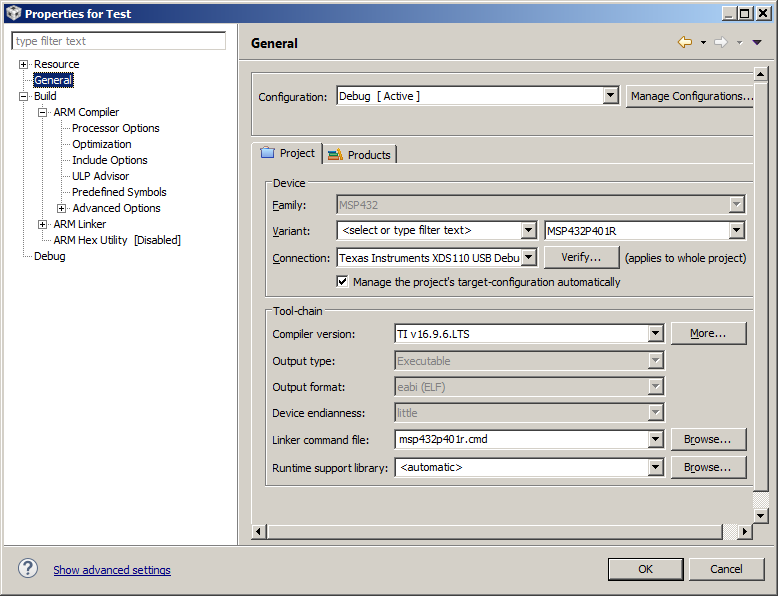
For more information on Linker command file and Runtime support library, see the articles Linker command files and Runtime support library.
The Output format field determines the format of the executable (.out).
The Compiler version field shows the version of compiler tools being used for the build. If the project imported into CCS was originally created with a version of compiler tools different than what is installed in your machine or what CCS is set to use, CCS will let you know that the version used for build is different than the original version. This information will be displayed in the Compiler version field as shown below.
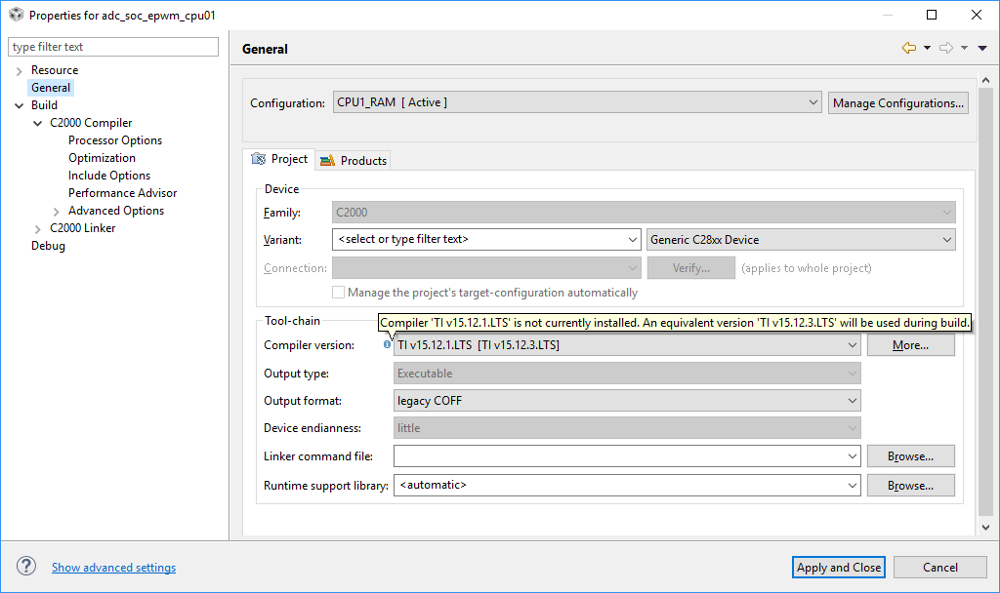
The Products tab in the right pane (previously named RTSC in CCS 7.3 and lower versions) contains the following:
- List of Products installed and enabled for the project
For RTSC/TI-RTOS based projects, it also contains:
- XDCpath Package Repositories
- Target
- Platform
- Build-Profile
{kind=link}
The Target field is automatically populated based on the Device Variant selected in the Project tab.
The Platform field is selectable by the user based on the target board. It is usually auto-populated for example projects.
The Build-profile field shows which RTSC and SYS/BIOS libraries the configuration build should link in. The selection applies compile options to the C file generated when building the RTSC configuration (.cfg). Note that this is different from the compile options selected under Compiler Properties that apply to the user source code. For example, if you choose the release RTSC profile, a -O2 optimization option may be added to the build, while for the debug RTSC profile, there would not be a -O2 optimization option. Building with release is a good choice as the RTSC and SYS/BIOS runtime functions will be faster and will use less code memory. Building with debug makes the build faster, but the runtime application will be less efficient.
6.1.3.1.2. Build Properties¶
To view and customize Build Properties, right-click on a project and go to Properties, then click on Build in the left pane. The right pane will display several tabs. The settings in each tab are described below. More details on these settings and their usage come in later sections.
Builder: Defines the build command, makefile generation and a few other build settings.
Most users will not need to adjust the default settings under
Builder and Makefile generation. These are set to use the
default build command and to generate makefiles automatically.
Advanced users may wish to customize the gmake command or even use a different
make utility.
See Changing the make utility if you wish to use a make
utility other than the default gmake.
The Stop on first build error check box controls whether the build should stop immediately after the first build error or not. By default, this box is unchecked. This passes the -k (–keep-going) option to gmake that tells it to “keep going” or continue with the build as much as possible after an error. If this box is checked, the -k option will go away and the build will stop at the first build error.
Note that even if this box is checked, it will still finish building the current source file and report all the errors found in that file. However, it will not continue with building other source files. In addition, if the Enable parallel build option is enabled, more than one source files may begin building concurrently, in which case the build will stop after all of those files are completed. Removing the -k option may be desired if using a custom build step.
The Enable parallel build setting is enabled by default and takes advantage of PCs with multiple cores to run parallel builds, thereby speeding up the build time. See the section Parallel builds for more details.
Validator: Sets level of adherence to different tools versions.
This tab is visible in CCS 7.4 and higher. This setting configures the criticality of tools version mismatches. This is useful if you want strict control over which version of compiler and other products are to be used for project build.
Steps: Pre-build and Post-build steps.
Pre-build steps are steps that run before the main project build takes
place.
Post-build steps are steps that run after the main project build
takes place.
See Pre and Post Build
Steps for more information.
Variables: Displays Build variables.
Enabling Show system variables shows all system level and built-in
variables, otherwise only project level variables are shown.
Build
variables can be used in compiler and linker build options, for example,
to specify paths to include files or libraries relative to a build
variable.
See Portable Projects
for more information on build variables.
Environment: Defines environment variables.
Link Order: Defines the order in which files are passed to the linker.
If you need strict control over the linking order you can add the required files here and control the order in which they get passed to the linker.
Dependencies: Defines dependencies between projects, allowing referenced projects to be built before dependent project.
See Project Dependencies for more information.
Note
In CCS 7.3 and lower, the Behavior tab defined build settings and workbench build behavior. In CCS 7.4 and higher these settings moved into the Builder tab.
Under the Build category there are several sub-categories:
- Compiler, Linker and Hex Utility are for configuring and setting options for the code generation tools
- XDCtools is for configuring a RTSC/TI-RTOS project
- SysConfig is for configuring a SysConfig project
Compiler/Linker: Compiler and Linker options
There are several compiler and linker options available to control your build. The list of options is too vast to go into detail here. Refer to the Compiler and Assembly Language Tools Users Guides for details on the options supported by the compiler and linker respectively. In the CCS Build Properties dialog, these options are categorized into groups for easy identification. You can drill down into the Compiler and Linker sections in the CCS GUI to access all of the available options.
Compiler and linker flags can also be added or removed directly via the Edit Flags button.
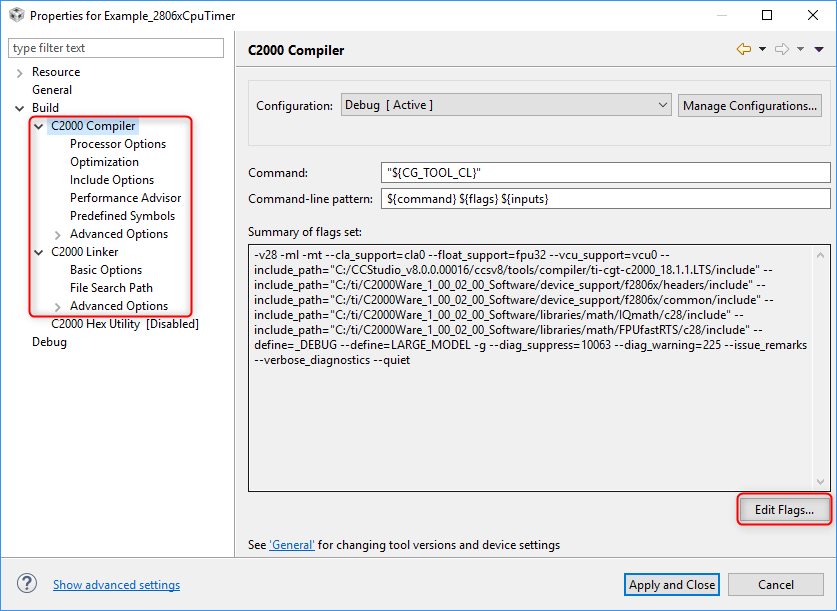
Hex Utility: Hex utility options
The Hex Utility can be enabled and invoked as part of the build in CCS. By default, the Hex Utility is disabled for a new CCS project. Once enabled, there are several options available. Refer to the Assembly Language Tools Users Guides for details on the options supported by the Hex Conversion Utility.
Hex utility flags can also be added or removed directly via the Edit Flags button.
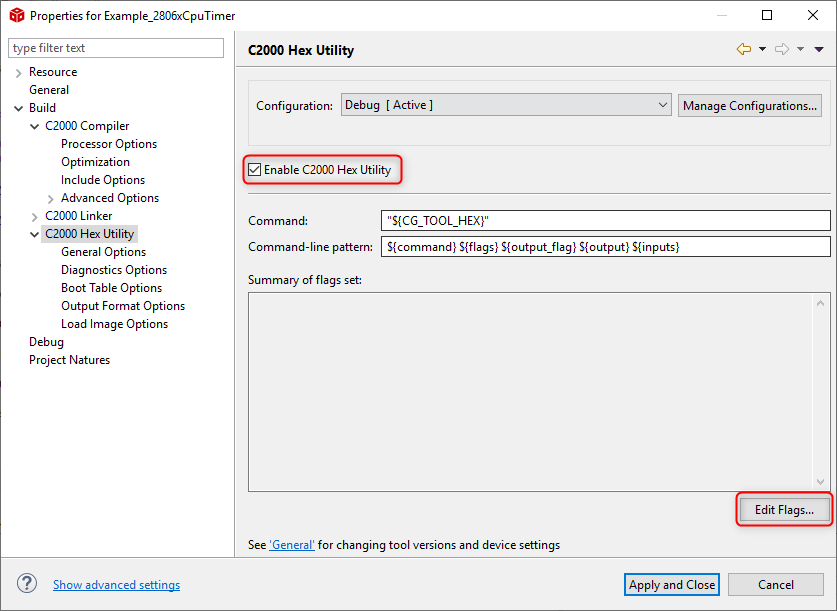For additional information on the Hex Utility integration into CCS, refer to the Hex Utility in CCS page.
XDCtools: XDCtools options
Refer to the SYS/BIOS Users Guide for supported options.
6.1.3.2. Advanced Project Settings¶
There are some advanced project settings that give the user control over features such as Code Analysis, Indexer, Code Style and others.
To view and customize these advanced settings, right-click on a project and go to Properties, then click on Show advanced settings at the bottom of the left pane. The C/C++ General selection allows access to these settings.
Some of the more commonly using setting, such as Code Analysis and Indexer, are described in more detail in the subsections below. For more information on the other settings, please refer to the the Eclipse CDT documentation.
6.1.3.2.1. Code Analysis¶
This is the built-in static code analyzer that comes with Eclipse CDT that reports on programming errors, syntax and semantic errors, etc. The default settings are set at workspace level, but can be configured at either workspace level or project level.
The settings can be accessed from Project Properties → C/C++ General → Code Analysis. Make sure to click on Show advanced settings at the bottom left corner of the dialog for this setting to become visible.
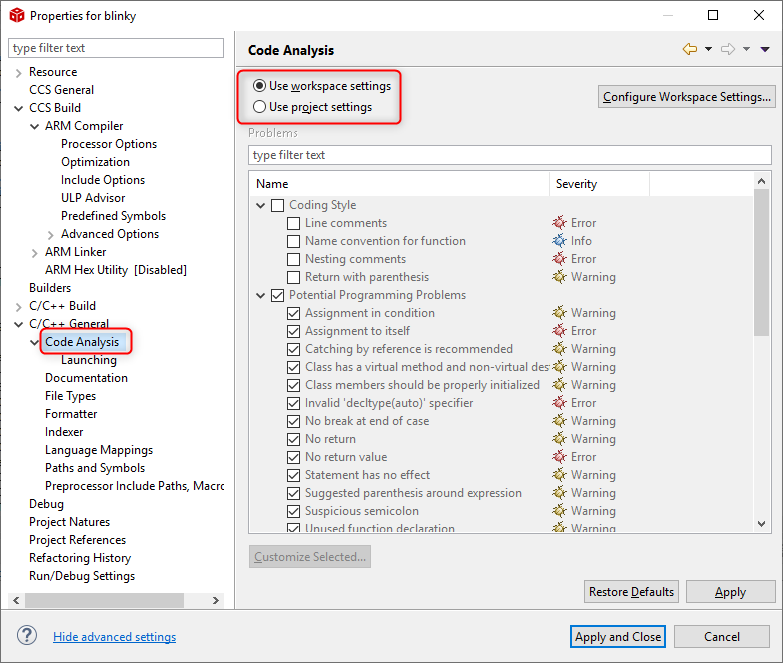Note
By default, Code Analysis checks are internally disabled for CCS projects.
The reason they are disabled by default is that the rules defined in the Eclipse static analysis tool are somewhat different than those defined by the TI tools. Users who are typically developing for TI embedded parts using TI compiler tools are more interested in the errors reported by the TI tools rather than the generic Eclipse CDT errors. To avoid confusion between the two sets of error checks, code analysis checks are disabled.
To confirm that code analysis is disabled, go to Project Properties → C/C++ General → Code Analysis → Launching, and observe that the “Run with build” and “Run as you type” boxes are unchecked.
If you click on Apply or Apply and Close in the Code Analysis dialog, it will turn on code analysis. This may trigger syntax and programming errors. If errors are reported only in the Problems view and CCS editor margins but not in the CCS build console, then they are likely coming from Eclipse CDT and not from TI compiler tools, hence do not impact the build.
Another way to confirm the source of the error is to look at the Type field in the Problems view.
If the Type is C/C++ Problem, it is coming from the TI build tools.
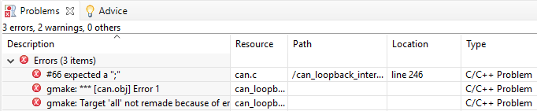If the Type is Semantic Error or Syntax Error it is coming from the Eclipse Code Analysis tool.
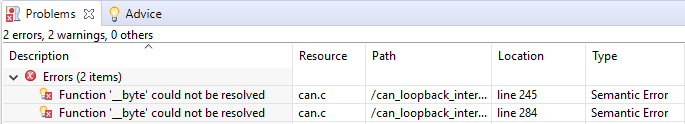
If code analysis checks were inadvertently turned on for a project, use
the following steps to turn it off again so the errors in the editor no longer appear:
- In the Problems view, select all messages/errors and hit Delete.
- Right-click on the project and click Refresh.
- Close the source file from the editor view and reopen it.
To leave code analysis on but disable or customize individual settings, select the specific item and click on Customize Selected.
6.1.3.2.2. Indexer¶
This is the built-in Eclipse parser. It parses source and header files in the project to create a database that provides the basis for C/C++ search, navigation features and content assist (code completion).
To configure or disable the indexer (at workspace level), go to menu Window → Preferences → C/C++ → Indexer. Make sure to click on Show advanced settings at the bottom left corner of the dialog for this setting to become visible.
The default settings are set at workspace level, but can be configured at either workspace level or project level (by enabling the checkbox highlighted below).
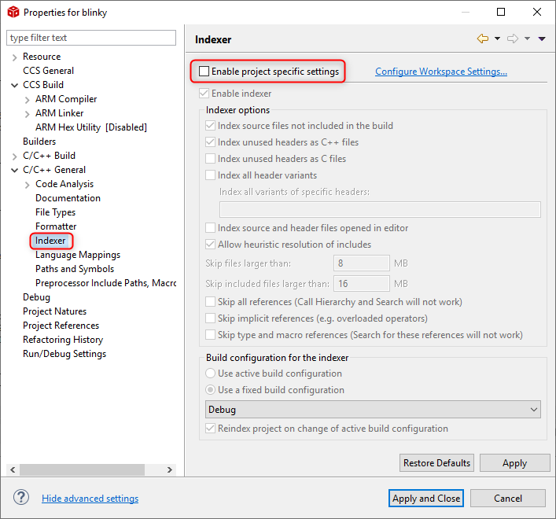By default the indexer is enabled, but you can turn it off if you don’t use the CCS editor or don’t need the advanced editor features. The indexer constantly scans all open projects to support some advanced editor features and uses a decent amount of system resources, sometimes causing CCS to appear sluggish. This is usually more evident with large projects or when there are many open projects in the workspace (or both). Turning off the indexer may improve performance in such situations.
In some cases, there may be Syntax errors or Symbol could not be resolved errors reported by the indexer even when there is no issue with the build itself. In other words the Build Console and Problems view do not report errors, but there are errors highlighted in the editor margin.
The first thing to try, especially if you are the only one experiencing such errors within a team on a known good project, is to open a new, clean workspace and re-import the project into it. If the errors persist or you experience these in your own custom project, you can look at adjusting the indexer settings or even disabling the indexer. This can be done from Project Properties → C/C++ General → Indexer. However, disabling the indexer completely means losing capabilities such as code completion and navigation to declaration/definition. A better option may be to disable the indexer markers without disabling the indexer itself. To do this, go to Window → Preferences → General → Editors → Text Editors → Annotations and uncheck all three checkboxes for C/C++ Indexer Markers.
6.1.3.2.2.1. Rebuild Index¶
If you find the advanced editor features such as Code completion, Open declaration etc. not working correctly, it could be due to a corrupted database/cache. In this case, rebuilding the Index could resolve the issue.
To rebuild the indexed database for a project, right-click on the project in the Project Explorer view and select Index → Rebuild.
6.1.3.3. Parallel Builds¶
Enabling the parallel build option speeds up compilation time by taking advantage of the multi core PCs that are very common these days. This can be especially beneficial when working with large projects.
This option is enabled by default in new CCS projects and most TI example projects.
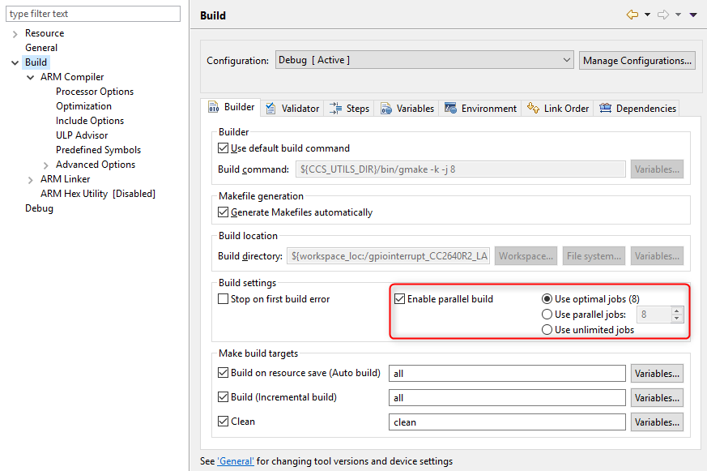
To customize the setting, right-click on the project in Project Explorer view and go to Properties → Build → Builder tab (or Behavior tab in CCS 7.3 and earlier).
The number of parallel jobs to run can be customized here. The default value will be set to the amount of available processors on the machine, but you may find a more optimal number by trial and error. Note that setting the number of jobs to a value much higher than the number of processors in your computer or setting it to use unlimited jobs may result in the system using up more memory and becoming sluggish.
Note
When parallel builds are enabled, the messages/banners in the CCS build console will be interleaved due to the multiple jobs running at the same time.
To see a video demo of parallel builds, check the References section.
6.1.3.4. Pre and Post Build Steps¶
As part of the CCS build, you can define pre-build and post-build steps.
Pre-build steps are steps that run before the main project build
takes place.
The pre-build step is always executed even if the state of
the main build is up to date. An attempt to execute the main build will
occur regardless of the success or failure of executing the pre-build
step.
Post-build steps are steps that run after the main project build
takes place.
The post-build step is not executed if the state of the
main build is determined to be up to date. It will be executed only if
the main-build has executed successfully.
One common use-case for post-build step is to convert the executable
(.out) created by the project into a hex or binary format using the
hex converter or other utilities such as tiobj2bin. The hex
converter is part of the compiler toolset (can be found in
\ccs\tools\compiler\<compiler_version>\bin within CCS installation) and
tiobj2bin is included with CCS (can be found in
\ccs\utils\tiobj2bin within CCS installation).
To set pre and post build steps in CCS, right-click on the project in the Project Explorer view, go to Properties → Build → Steps tab and enter the desired commands in the Pre-build steps or Post-build steps fields.
For example, to convert the executable (.out) to binary format (.bin), the following command can be used as post-build step:
"${CCS_INSTALL_ROOT}/utils/tiobj2bin/tiobj2bin" "${BuildArtifactFileName}" "${BuildArtifactFileBaseName}.bin" "${CG_TOOL_ROOT}/bin/ofd2000" "${CG_TOOL_ROOT}/bin/hex2000" "${CCS_INSTALL_ROOT}/utils/tiobj2bin/mkhex4bin"
Be sure to replace ofd2000 and hex2000 with the respective binaries for your device, for example, ofd6x and hex6x (for c6000) or armofd and armhex (for ARM).
Note that some example projects in software packages like TivaWare and Simplelink SDKs already have a similar post-build, which you can use as reference as well.
6.1.3.4.1. Running Multiple Commands¶
The fields for pre and post build steps allows for multiple commands to be added, each on a new line.
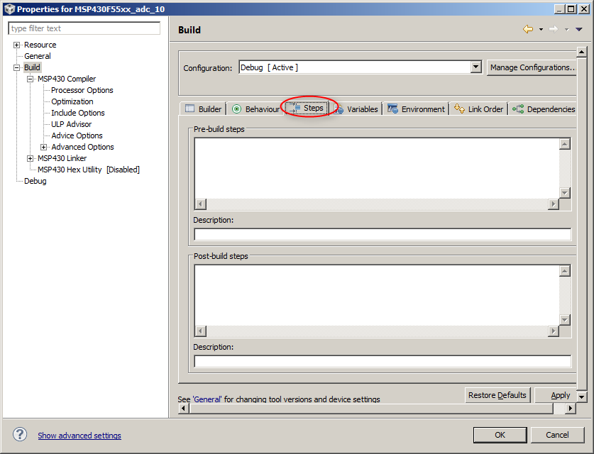
6.1.3.4.2. Adding Custom Steps¶
To add some custom steps or call a batch file after the compile step but before the link step, you can add a pre-link step to the command field in the Linker options, as shown below. The custom step is basically prepended before the existing command and separated with an ampersand. The below example adds a pre-link step to call a batch file.
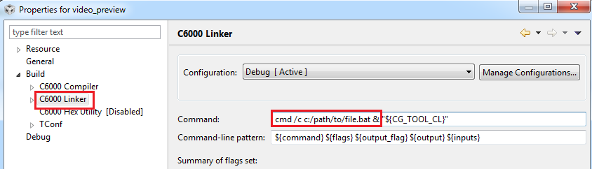
6.1.3.5. Changing the Make Utility¶
CCS uses gmake (GNU make) to build projects. If you have a need to use a different make utility or custom build step, you can do the following:
- In Project Explorer view, right-click on the project and select Properties.
- Select Build in the left pane and Builder tab in the right pane.
- Uncheck Use default build command.
- In the Build command field type in the custom command to use for the build.
You can also use this if you want to simply modify the default build command to pass additional options to gmake.
When using a custom build step, you may want to consider enabling the build setting Stop on first build error. If this is not enabled it will add a -k (–keep-going) option to the end of the command (for gmake, this option tells it to “keep going” or continue with the build as much as possible after an error), which may not be desired for certain custom build commands.
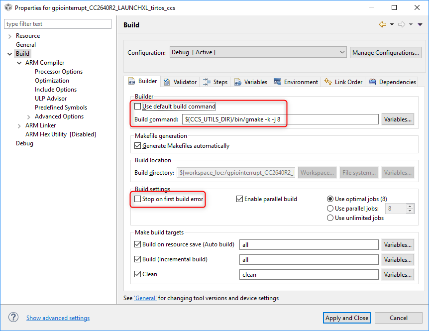
Note
This setting has to be changed at the project level. There is no global way to change the default builder or builder options.
6.1.3.6. Project Dependencies¶
Projects may be constructed such that the main project is dependent on other projects. A common use case is when a main project links in a library and the project for the library is set up as a referenced project. In this set up, when you build the main project, the referenced project will be built first and then the main project.
Project dependencies can be set up when creating a new CCS project or from the Project Properties of an existing project. In order to create a dependency, all referenced projects must be in the same workspace as the main project.
To create a project dependency:
- In Project Explorer view, right-click on the project and select Properties.
- Select Build in the left pane and Dependencies tab in the right pane.
- Click on Add, choose the project to add to the list of references and click OK.
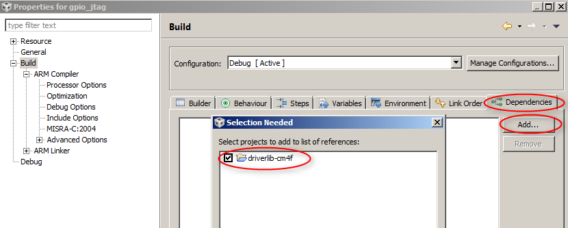
The Referenced Build-configuration column allows you to choose which build configuration to use when building the referenced project. Note that this setting will apply for the active build configuration of the main project. This setting lets you control which build configuration of the referenced project will be built prior to building a specific build configuration of the main project.
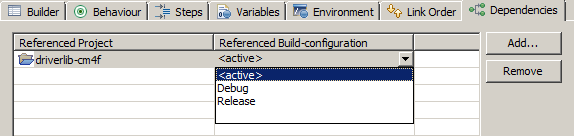
Creating a dependency does not mean that the library generated by the dependent project is automatically linked into the main project. It simply means that the dependent project will be built prior to the main project so any changes made to the dependent project since last build will be picked up. The library file will still need to be manually linked to the main project. This can be done either by linking the library file to the main project or by adding the library name and path to the main project’s linker options.
To see a video demo of how to set up project dependencies, check the References section.
6.1.3.6.1. Inherited Variables¶
Starting with CCSv7, projects that have a dependency on a library project may show the following variables in the compiler include path and linker library and search path options:
"${INHERITED_INCLUDE_PATH}"
"${INHERITED_LIBRARIES}"
"${INHERITED_LIBRARY_PATH}"
It may appear that these variables are being inherited from the dependent project, however, in reality these variables are not being used by CCS at this time. Although the variables are added to the project, they currently do not resolve to anything or serve any purpose.
One way to confirm is that hovering over the three dots (...) next to the variable shows that it resolves to <none>.
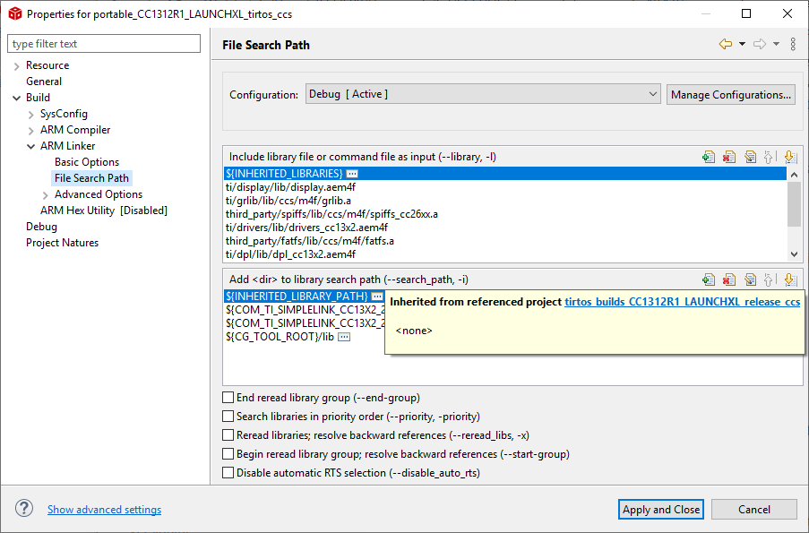6.1.3.7. File Specific Options¶
It is possible to set file level build options that are different than the project level options. This is useful, for example, when specific files require a higher or lower level of optimization than other files.
To set file-specific options, right-click on the file (or folder) in the Project Explorer view, go to Properties, and set the desired options.
Files with file-specific options appear with a special icon (push pin) in the Project Explorer view.
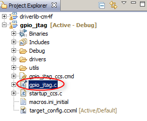
To revert the file back to its default settings:
- Right-click on the file in the Project Explorer view.
- Select Resource Configurations → Reset to Default.
- Select the resource configuration to restore to default settings and click OK.
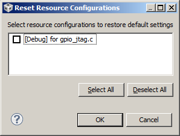
The special icon will disappear when the settings reset back to default.
To see a video demo of setting file specific options, check the References section.
When you add file specific options, a section is added to the project metadata file to indicate that there are file specific options and which default options to override. When you use the Resource Configurations → Reset to Default option on the file, it will remove that whole section. Hence the project sees it as not having any file specific options in the project anymore and the special icon is also removed for that file.
If you instead go to the file’s Properties → Resource and click on Restore Defaults, it will restore the options back to default but will not remove the special icon. This is because even though the override options are removed, the special section for the file that was previously added is still there and so the icon remains.
If you wish to know which file specific options are set for a certain source file, there are a couple of ways to find out:
- Using the GUI:
Right-click on the source file, select Properties, and browse through the options. The file specific options will be highlighted in bold.
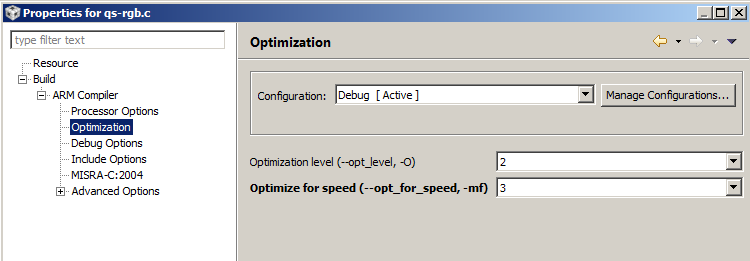
- Using the.cproject file in the project folder:
When file specific options are added, a section is added to this project file (look for it between <fileInfo> tags).
6.1.3.8. Exclude Files from Build¶
By default all files and folders within the CCS project folder are assumed to be part of the project build.
To exclude file(s) or folders from the CCS project build, right-click on the file or folder in the Project Explorer view and select Exclude from Build.
If the project has multiple build configurations, you can specify for which build configurations you want to exclude the file. To do this, right-click on the file or folder in the Project Explorer view and select Resource Configurations → Exclude from Build. In the pop-up dialog select the build configurations for which you want to exclude that file.
With the default settings, files (or folders) excluded from build will appear grayed out in Project Explorer view.
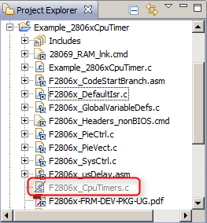
If the file(s) excluded from build are not visible in the Project Explorer view at all, check if the below option is enabled in the view filter for the Project Explorer view.
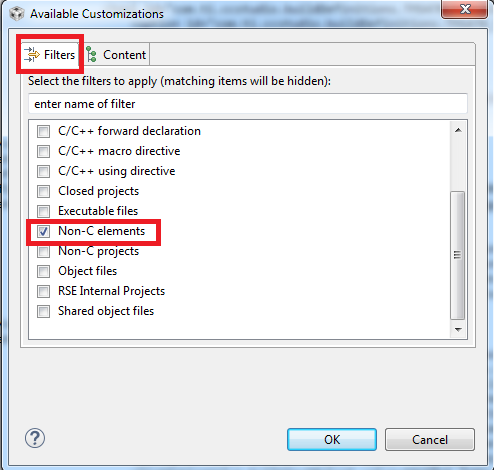
6.1.3.9. Changing Compiler Versions¶
All CCS releases come bundled with specific version(s) of compiler tools. During project development phase you may want to build your project with a different version of compiler tools than what is included with CCS. One reason may be to avail of bug fixes and enhancements in newer versions of compilers, another reason may be to stay locked down on an older version of the compiler. CCS is very flexible in allowing you to do this.
To view the version of compiler used for the project build, right-click on the project in the Project Explorer view and go to Properties → General → Project tab, and view the Compiler version field. If the project imported into CCS was originally created with a version of compiler tools different than what is installed in your machine or what CCS is set to use, that information will be shown when you hover over the Compiler version field.
The drop-down menu in the Compiler version field will show the different versions available to use if there is more than one version discovered/installed into CCS.
If you wish to build with a different version of compiler tools than what is already available, you can install the specific version and have CCS discover it. Please see the Compiler Installation and Selection article for details.
6.1.3.10. Changing SYSBIOS/XDCtools and Product Versions¶
Similar to changing the version of compiler tools, you can also change the version of XDCtools and products like SDKs used to build a project.
To view the current version of XDCtools used for the build and other Product details, right-click on the project and go to Properties → General → Products tab. This tab displays the version of XDCtools used for the build, and Products and Repositories available and enabled, among other things.
The drop-down menu under XDCtools version will show the different versions available to use if there is more than one version discovered/installed into CCS. Similarly, the Products and Repositories view will show all the products discovered/installed into CCS.
If you wish to build with a different version of XDCtools or SDK than what is already available, you can install the specific version and have CCS discover it (a.k.a. Product Discovery). Please see the Product Installation and Selection article for details.
6.1.3.11. Build Configurations¶
During development, it is quite common to have the need to create a single project that builds executables (.out files) with different project options, source files or even for different memory configurations. In CCS this is done with Project Build Configurations.
A Project Build Configuration defines a set of build options and resources at the project level that can be labeled and easily accessible with a very minimal number of steps. Therefore, by creating multiple build configurations within a single project it is possible to organize and quickly switch between different sets of options and resources.
When a new project is created in CCS, two build configurations are created by default: Debug and Release. The Debug build configuration usually has no optimization and full symbolic debug enabled, to enable easy debugging. The Release build configuration will often have optimization enabled and symbolic debug disabled, to get your code as small or fast as possible without the need for source level debug. These are just the options usually set for the default build configurations, it could be different for different device families, so it is best to check the default options set for each build configuration and tweak it as necessary.
When a new project is created or an existing project is imported into CCS, the first configuration (in alphabetical order) is set to active in the workspace. Usually this is the Debug configuration but may be different depending on the configuration names.
Note that some example projects provided by TI may have custom configuration names other than Debug and Release. For example, projects in C2000Ware may have RAM and Flash configurations, where one is set up to run from RAM and the other to run from Flash. Based on the configuration, the project may use a different linker command fle and may or may not include certain source files.
When a project is built, the output files generated by the build are placed in a configuration-specific subdirectory. For example, if the project is in the directory MyProjects, the output files for the Debug configuration will be placed in MyProjects\Debug. Similarly, the output files for the Release configuration will be placed in MyProjects\Release.
To change the active configuration:
- Right-click on the project in the Project Explorer view.
- Go to Build Configurations → Set Active and select the desired configuration.
OR - Right-click on the project in the Project Explorer view and go to Properties.
- Select General in the left pane.
- Click on Manage Configurations.
- Select the desired configuration and click Set Active.
To see a video demo of how to change the build configuration, check the References section.
To create and manage your own custom configurations:
- Right-click on the project in the Project Explorer view.
- Go to Build Configurations → Manage.
OR - Right-click on the project in the Project Explorer view and go to Properties.
- Select General in the left pane.
- Click on Manage Configurations.
Here you can delete, rename and create new configurations. When creating a new configuration there are several options available to copy a base set of options/settings.
To see a video demo of how to create and manage build configurations, check the References section.
To build all the build configurations of a project:
- Right-click on the project in the Project Explorer view.
- Go to Build Configurations → Build All.
6.2. Building Projects¶
There are several options available for building projects:
- Full Builds - re-build and re-link all the source files.
To re-build the currently active project: Select Rebuild Project from project’s context menu.
To re-build all the open projects in the workspace: Select menu Project → Clean. Then Project → Build. - Incremental Builds - build and re-link only the source files that
were modified since last build.
To build the currently active project: Select menu Project → Build Project or select Build Project from project’s context menu.
To build all the open projects in the workspace: Select menu Project → Build All. This will build the active build configuration of all the projects in the workspace. - Build Automatically - performs an incremental build automatically
whenever any source files or relevant header files are saved.
Select menu Project → Build Automatically.
During the build, the Console view displays the standard and error outputs of the build tools.
When the build is finished, the Problems
view displays any errors or warnings.
If there are errors encountered during build, refer to the Build errors in CCS page. It discusses some of the more common build errors and warnings and how to resolve them.
6.2.1. Project Files and Build System Overview¶
CCS projects use the Eclipse managed make system where the makefile is generated automatically and takes care of managing the toolchain and build details.
This section provides an overview of the project metadata files and describes what happens under the hood during the project create and build steps.
6.2.1.1. Create Project¶
When a new CCS project is created, the following project metadata files and folders are created in the project folder:
- .ccsproject: Stores project settings contributed by TI.
- Ex: Stores initial device/toolchain settings entered by user at project creation.
- .cproject: Stores project settings contributed by CDT (C/C++ Development Tooling).
- Ex: Stores most of the build properties under the ‘Build’ section (most of the compiler/linker options).
- .project: Stores project settings contributed by Eclipse.
- Ex: Stores information for linked resources, linked resource variables, resource filters.
- .settings (folder): Stores project specific settings that differ from the default CCS settings.
- Ex: Workspace preferences
- makefile.defs (SYS/BIOS): Additional make rules included by the generated project makefile for SYS/BIOS projects.
The .ccsproject file holds a snapshot of selections made at the time of project creation, and rarely changes after that. So if you change properties such as the device-variant or compiler tools version, the change is not stored in the .ccsproject file, but instead stored in the .cproject file.
The .ccsproject file is mainly a historical left-over from the days when some settings were stored on a project-level (as opposed to build-configuration-level). But the file is still currently used to:
- Allow the user to roll back certain settings to their original values.
- Store some project-wide settings, such as the connection for debugging ( and maybe other settings in the future).
Although it seems like this file stores some unnecessary information, it could be helpful when trying to debug issues.
The .ccsproject, .cproject, .project files are XML files. It is generally NOT recommended to manually edit these files unless you are an expert user and have a good understanding of what you are modifying.
6.2.1.2. Build/Rebuild Project¶
When a CCS project is built for the first time or rebuilt, it goes through the following steps:
- Auto-generate makefiles:
Generates main makefile and several *.mk include files in the active project configuration folder (such as Debug folder, by default).- makefile: Main makefile that includes the generated *.mk files
- All of the sources participating in the build are defined in the
below *.mk files
- objects.mk
- subdir.mk
- subdir_vars.mk
- Optionally clean using ‘gmake’ (when selecting Rebuild
Project or Clean Project).
Deletes .obj, .pp and .out files in the active configuration folder (such as Debug folder, by default). It does not delete makefiles and .map files. - Build the main makefile using ‘gmake’.
The main make build in turn invokes the pre-build (if any), main-build and post-build (if any) steps. These steps are described in more detail below.
A typical project build looks like the following:
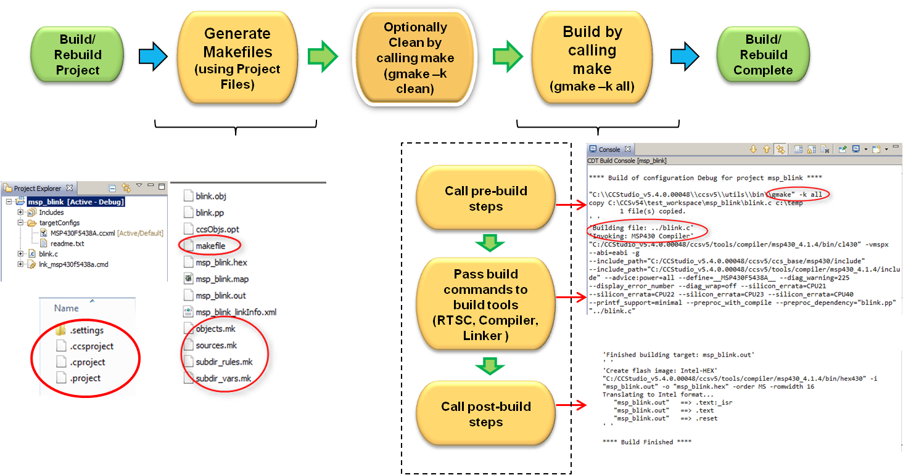
6.2.1.2.1. Makefiles¶
The makefile auto-generated by CCS includes a few other files, namely makefile.init, makefile.defs and makefile.targets.
makefile.defs is used for defining additional make rules for SYS/BIOS
projects.
makefile.init and makefile.targets are not used by the TI
build environment. They are inserted into the makefile by one of the
Eclipse components(CDT) and can be used to extend the behavior. For
example, you can create these optional makefiles in the top-level folder
of the project:
- makefile.init – included early in the build
- makefile.targets – for adding rules for additional make targets
Each file, if it exists, gets included at a specific point along the build. You can see where they get included by taking a look at the makefile in the active project configuration folder.
Example of using makefile.targets:
If you wish to add some additional clean commands (i.e. perform some clean actions in addition to what the default clean does) you could do the following:
1. Create a makefile.targets that contains rules for the additional make targets and place the file in the top-level folder of the project. For example, a makefile.targets file to perform additional clean commands (in this case, delete the main.asm file) could look like this:
myclean: -$(RM) "main.asm" -@echo 'Finished my custom clean'
2. Modify the Build → Builder tab in CCS to add “myclean” in addition to the default clean.
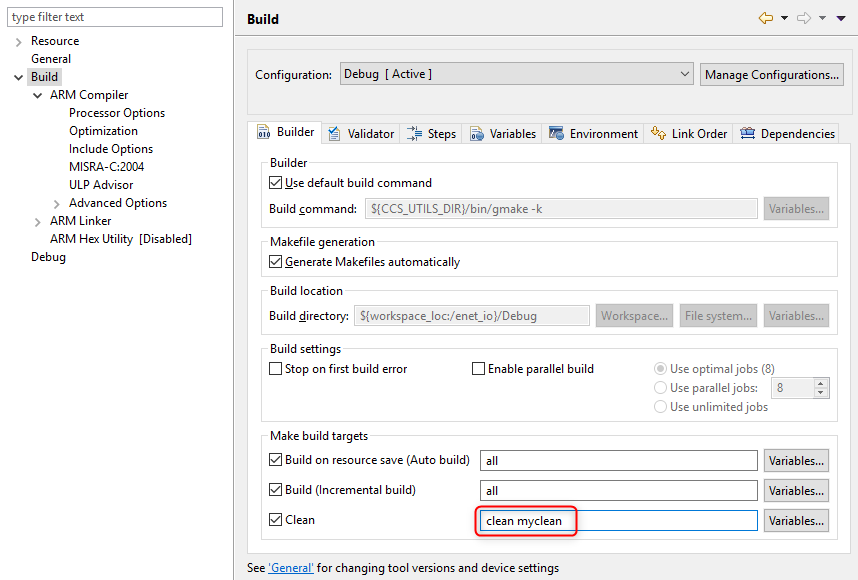
Now when you select Clean Project, it will perform the default clean as well as the custom myclean rule, as shown in the output below.
**** Clean-only build of configuration Debug for project test_f28377D **** "C:\\CCStudio_v6.1.1.00022\\ccsv6\\utils\\bin\\gmake" -k clean myclean DEL /F "test_f28377D.out" "test_f28377D.hex" DEL /F "main.pp" DEL /F "main.obj" 'Finished clean' ' ' DEL /F "main.asm" 'Finished my custom clean'
Example of using makefile.init:
This example illustrates how to hook into the generated makefile to script a custom pre-build step. This is useful in cases where the commands cannot be run as a pre-build step in CCS (for example, in cases where you want the main build to fail if the pre-build fails).
Create a makefile.init file that contains custom commands and place the file in the top-level folder of the project. For example, a makefile.init file could look like this:
all: custom-step custom-step: @echo Custom pre-build step @mkdir a**b
Go to Project Properties → Build → Builder tab, enable Stop on first build error, and make sure that Enable parallel build is not enabled.
Now, when you build your project, the build will stop immediately after failing to execute the "@mkdir a**b" command in the custom-step. And if you change the command to “@mkdir ab”, the custom-step will succeed and the rest of the build will proceed.
This is just a simple example that shows how to hook into the generated makefile to script a custom pre-build or post-build step. Similarly, hooks can be scripted for individual source files.
To completely customize the makefile, you can go to Project Properties → Build → Builder tab, and deselect “Generate Makefiles automatically”. After the project is built once you can edit (or completely rewrite) the generated makefiles.
As additional reference, these external web posts touch on the subject of
these makefiles:
Eclipse Community forum thread
https://stackoverflow.com/questions/25575244/eclipse-cdt-generate-makefile-with-makefile-init-makefile-defs-makefile-target
6.2.1.2.2. Pre-build¶
Pre-build steps are steps that run before the main project build takes place.
For details on setting up and using the pre-build step in CCS, see the section Pre and Post Build Steps.
6.2.1.2.3. Main Build¶
When a project is built in CCS, the main build is the step where the build commands and input files are passed to the Compiler tools, and optionally to RTSC tools. RTSC tools are invoked only for projects that involve RTSC components (IPC, SYS/BIOS etc) and are called prior to the compiler tools. Starting with CCS 8.2, there is also support for the SysConfig tool that can be used to configure components like TI Drivers and device-specific components (such as the networking stack, EasyLink, and WiFi) on SimpleLink devices. Each build tool takes in a set of input files and generates a set of output files.
The figure below shows a typical software development flow and gives an idea of the build tools and files involved when a project is built in CCS. All of this is handled in the background by the makefile, however it is helpful to have an understanding of the build flow to better understand the build output that appears in the CCS build console.
The build tools components are highlighted in blue and the input/output files are highlighted in white . The RTSC Tools and SysConfig Tools are dotted to show that they come into play only when working with RTSC and/or SysConfig.

The most common path of software development flow, in the absence of RTSC or SysConfig, is the straight path going from C/C++ Source Files down to the Executable file through the Compiler, Assembler and Linker. The Assembler step usually runs in the background and is hidden from the user. The Archiver and Library build utility are peripheral functions that enhance the process and may or may not be run depending on the requirements.
If the project is a RTSC project, the XDCtools run first and generate output files that are then passed to the compiler and linker.
If the SysConfig tool is used to configure components, the SysConfig command runs prior to the compiler and generates output files (.c, .h) that are then passed to the compiler. The files generated by SysConfig will depend on which SDK components are integrated into the application. As more SDK components start to be integrated with SysConfig, more files will be generated.
For more information on each of the tools shown in figure, please see the references below:
Compiler: accepts C/C++ source files and produces assembly language source code.
See the Compiler Users Guide for your specific processor family.Assembler: translates assembly language source files into machine language relocatable object files.
See the Assembly Language Tools Users Guide for your specific processor family.Linker: combines relocatable object files into a single absolute executable object file. It accepts relocatable object files and object libraries as input.
See the “Linker Description” chapter in the Assembly Language Tools Users Guide for your specific processor family.Archiver: collects a group of files into a single archive file, called a library. It also allows you to modify a library by deleting, replacing, extracting, or adding members.
See the “Archiver Description” chapter in the Assembly Language Tools Users Guide for your specific processor family.Library build utility: builds customized run-time-support libraries.
See the Assembly Language Tools Users Guide for your specific processor family.XDCtools: provides configuration tools used to create and build a static configuration as part of your application.
See the XDCtools User's Guide for more information.SysConfig Tool: tools used to create and build system configuration as part of your application.
See this article for more information. Also refer to the below documentation:- SimpleLink: SimpleLink MCU SDK User's Guide
- C2000: C2000 Academy
- Sitara MCU: Sitara MCU+ Academy
For more information on some of the input and output files in a typical CCS project build flow refer to the article Files in CCS Projects.
6.2.1.2.4. Post-build¶
The main build step discussed above results in a executable file (.out). This file can be directly loaded to a target device and debugged using Code Composer Studio, or can be converted to a hex format and programmed to a target device by a hex programmer. Other types of post processing can also be performed on the .out file using utilities included with the compiler tools.
The figure below shows some of the typical post build operations.
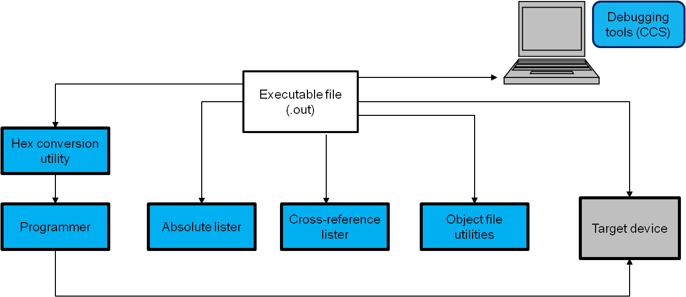{kind=link}
For more information on each of the tools shown in figure, please see the references below:
- Hex conversion utility: converts an object file into other hex formats.
- Absolute Lister: accepts linked object files as input and creates .abs files as output. The .abs files can be assembled to produce a listing that contains absolute, rather than relative, addresses.
- Cross-reference Lister: uses object files to produce a cross-reference listing showing symbols, their definitions, and their references in the linked source files.
- Object file utilities: comprises of utilities such as Object File Display utility, Disassembler, Name utility and Strip utility.
Details on all the above tools are in the Assembly Language Tools Users Guide.
For details on setting up and using the post-build step in CCS, see the section Pre and Post Build Steps.
6.2.1.3. Console View¶
At build time, the Console view displays the standard and error outputs of the build tools. When building multiple projects, the Console view will show the output for the active project selected in the Project Explorer view.
The view displays the options passed to the various build tools and any diagnostic messages reported by the build tools. The information reported in this view are often more detailed and useful than the summary reported in the Problems view.
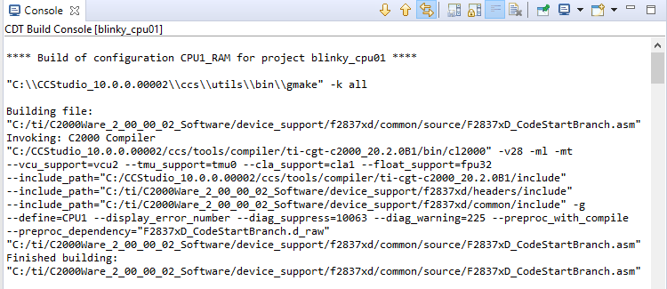6.2.1.4. Problems View¶
The Problems view provides a summary of errors and warnings encountered during project build.
Some messages will have a clickable link that provides more details about the diagnostic.
The view contains the following information in the columns:
- Description: Description of the error.
- Resource: Resource/file where the error occured.
- Path: Path to the resource that generated the error.
- Location: Location/Line in the resource that generated the error.
- Type: Type of error.
If the Type column says C/C++ Problem, it indicates the error is coming from the TI build tools. If it says Semantic Error or Syntax Error, the error could be coming from the Eclipse Code Analysis tool.
For more information on Code Analysis errors, refer to the Code Analysis section.
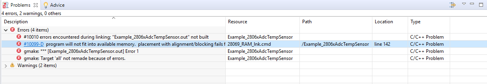{kind=link}
6.3. Creating and Building Projects from Command Line¶
CCS has terminal commands for creating, building, and importing projects. This is very convenient for nightly automated builds, or simply to perform these actions without bringing up the GUI interface.
Please refer to the article below for details on all the supported commands and their usage.
6.4. System Projects¶
System Projects were introduced starting with CCS 9.x. It is a special type of project designed to simplify management of multiple projects that are associated with different individual cores of a multicore device. In the System Project, associations are made between cores on a device and projects in the workspace. Building the System Project would build all associated projects and debugging a System Project would launch a debug session for the device and load the program build from the project associated with each core.
For more details on how to use System Projects, Please refer to this article.
6.5. Working with Source Control¶
Please refer to the article below for information on working with source control in CCS.
6.6. Understanding Tools Versioning¶
The Code Composer Studio toolset consists of different components such as the Compiler tools and XDCtools. It is important to understand that each component has its own version number and updates for each component may be released independent of a CCS release.
For example, CCS 10.0 includes the following:
- ARM TI compiler tools version 20.2.0.LTS
- XDCtools version 3.60.02.34
Updates to each of these components can be installed individually while still working with CCS 10.0.
To install compiler updates refer to the Compiler Installation and
Selection article.
To specifically understand how compiler tools are versioned and
released, please see this article.
To install XDCtools and other Target Content updates refer to the Product Installation and Selection article.
A CCS project can be modified to build with any of the available versions of compiler tools or RTSC products. The same can be done with different versions of SDKs as well.
When reporting an issue to TI, it is important to not only include the version of CCS, but also the version of Compiler tools, SYS/BIOS, XDCtools, SDK, or any other relevant components and software, depending on the issue.
- The Compiler version will be listed under Project → Properties → General → Project (or Main) tab.
- If it is a RTSC project, the versions of target content components will be listed under Project → Properties → General → Product (or RTSC) tab.
- Versions of other relevant components, such as emulation, can be found under menu Help → About Code Composer Studio → Installation Details.
6.7. Troubleshooting¶
If there are errors encountered during project import or build, refer to this troubleshooting page: Project Import and Build errors in CCS.